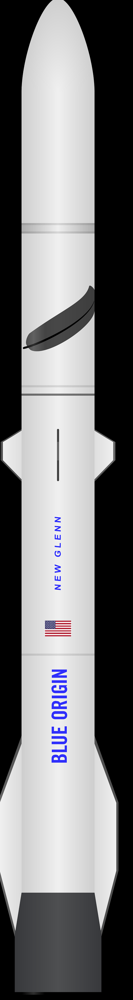

Top 4 nadchodzące rakiety kosmiczne
2.New Glen

Ciężka rakieta New Glenn opracowywana i produkowana przez należącą do Jeffa Bezosa firmę Blue Origin. Rakieta mabyć w stanei wynieść 45 ton ładunku na niską orbitę Ziemi lub trochę ponad 13,5 tony na orbitę transferową do geostacjonarnej. Rakieta ma mieć 7 metrów średnicy i 98 metrów wysokości, a jej pierwszy stopień będzie wieloktrotnego użytku, będzie to także pierwsza rakieta której pierwszy stopień będzie lądował na statku (poprzednia rakieta tej firmy(new shepard) oraz boostery falcona heavy lądują na odpowiednich stanowiskach, a pierwszy stopień falcona heavy oraz falcony 9 na barkach) pierwszy stopień będzie napędzany siedmioma silnikami BE-4 zasilanymi metanem, a drugi dwoma silnikami BE-3U zasilanymi wodorem. Pierwszy start RAkiety planowany jest na późny 2022.